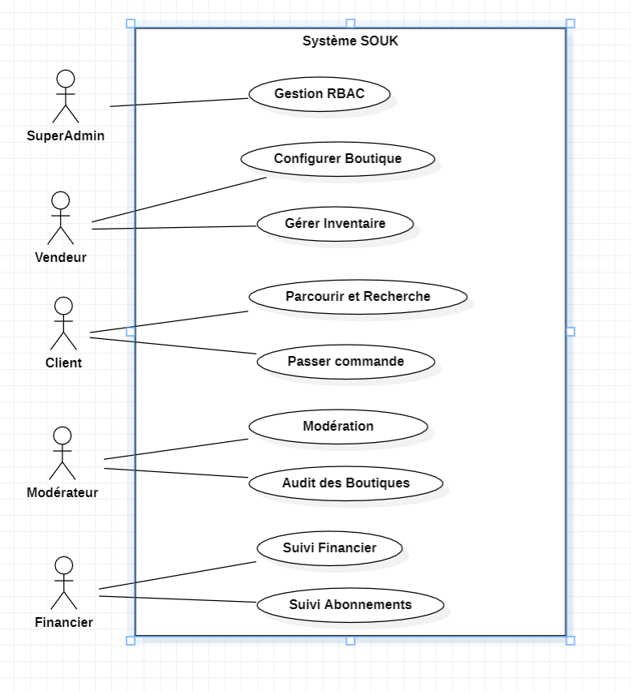
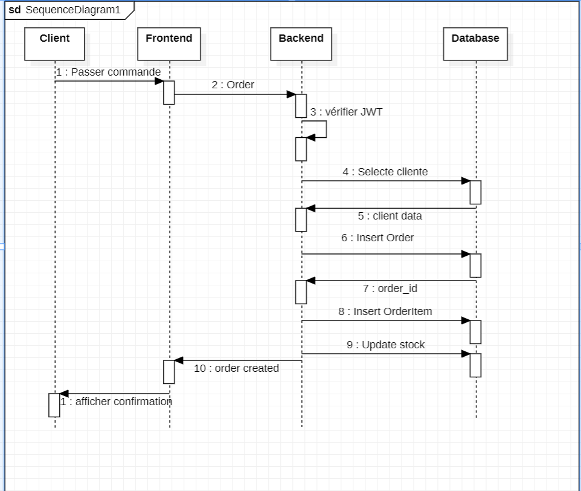
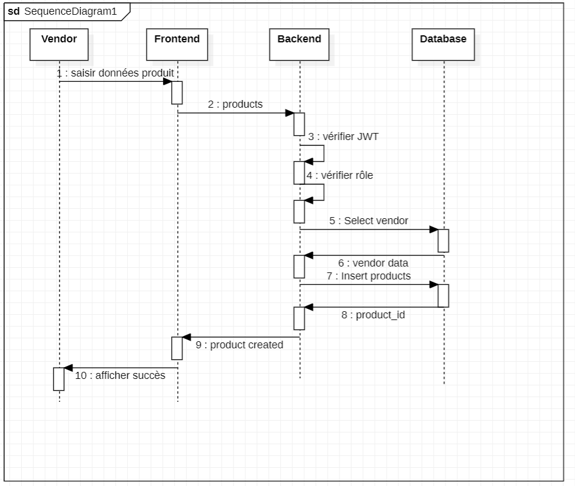

Plateforme SaaS E-commerce Multi-Tenant pour l'artisanat et le commerce au Maroc
Réalisé par : Akram Sabouni & Yousfi Mohammed
Nous tenons à exprimer notre profonde gratitude à notre professeure encadrante, Professeure Amira, pour son suivi académique, ses conseils précieux et son orientation tout au long de ce projet de synthèse. Nos remerciements s'étendent également au corps professoral et à toutes les personnes ayant contribué de près ou de loin à l'aboutissement de ce travail.
Dans une ère de forte numérisation, de nombreux artisans et créateurs marocains peinent à se faire une place en ligne. Le commerce électronique s'impose comme un canal incontournable, mais la transition numérique reste un défi majeur. Face à ce constat, le projet SOUK ✦ a été conçu. SOUK est une plateforme SaaS (Software as a Service) Multi-tenant (Marketplace hybride), permettant à tout créateur de générer instantanément une boutique e-commerce luxueuse et personnalisée grâce à l'Intelligence Artificielle. Ce rapport détaille le processus de développement de cette solution.
Ce projet s'inscrit dans le cadre du projet de synthèse de fin d'année. Il vise à répondre à une demande croissante de solutions e-commerce accessibles, scalables et esthétiques, spécifiquement adaptées au marché marocain et à l'écosystème artisanal.
Les artisans locaux souffrent d'une fracture numérique profonde. Les outils e-commerce classiques sont complexes, coûteux, et inadaptés aux réalités des petites structures artisanales. Cette exclusion numérique freine le développement économique local et la mise en valeur du "Brand Story" marocain.
Le système s'adresse à des cibles (Personas) bien définies :
Le système intègre 25 fonctionnalités clés réparties en catégories :
Nous avons analysé les leaders du marché (Shopify) ainsi que les solutions locales (YouCan). Notre analyse révèle un vide pour une plateforme qui allie facilité, identité marocaine "Premium" et assistance native par l'Intelligence Artificielle. Le modèle Freemium avec 0% de commission sur les plans premium de SOUK offre une alternative économiquement viable pour les artisans.
L'architecture adopte un modèle multi-tenant où chaque vendeur dispose d'une isolation logique complète.
Ce diagramme présente les interactions entre les différents acteurs du système et les fonctionnalités accessibles selon les rôles RBAC définis. (Figure 1 — Diagramme de Cas d'Utilisation Global SOUK ✦)

Architecture orientée objet du backend Laravel 11. Les relations illustrent l'isolation multi-tenant assurée par le TenantScope Eloquent appliqué sur chaque modèle. (Figure 2 — Diagramme de Classes Technique)
La base de données repose sur une architecture à base unique optimisée, structurée par les tables suivantes :
users (authentification globale), clients, vendors, staff.products (liés strictement à un store).orders et order_items.packages (Forfaits SaaS), subscriptions (abonnements actifs), commissions.teams, roles, permissions, role_permission, user_team_memberships.Ce diagramme modélise le flux complet d'une requête authentifiée à travers la chaîne de middlewares, illustrant l'isolation garantie au niveau ORM (Isolation SaaS). (Figures 3 et 4)


Afin d'assurer une expérience luxueuse et scalable :
Le backend Laravel sert de Headless API sécurisée. Le frontend consomme les endpoints via Axios avec injection dynamique des tokens JWT. L'isolation des données (Multi-tenancy) est assurée au niveau de l'ORM par des Scopes Eloquent (TenantScope), garantissant aucune fuite de données inter-tenant.
Durant les 3 mois de développement :
L'équipe interne SOUK gère la plateforme via des rôles (SuperAdmin, Support, Finance, Moderator). Ils accèdent aux Activity Logs, gèrent les forfaits SaaS (Free, Pro, Premium) et analysent les conversions globales.
L'artisan accède à un Dashboard où il utilise l'AI Store Creator pour générer son identité visuelle et l'AI Product Optimizer pour générer des descriptions SEO-friendly. Il peut interagir via le Chat Real-time avec ses clients.
Les acheteurs naviguent dans une Marketplace luxueuse, utilisent le Smart Search AI, profitent d'un Social Feed (Trending System) pour découvrir les artisans, et finalisent leurs achats via un Checkout intelligent incluant un système de points de fidélité.
Le système a été éprouvé via des tests QA stricts (Mois 3 du planning) :
TenantScope interdisant l'accès croisé aux bases de données.Difficultés techniques :
tenant_id géré automatiquement par les Scopes d'Eloquent.Limites assumées :
L'infrastructure actuelle étant hautement scalable, plusieurs évolutions sont programmées :
Le projet SOUK ✦ a atteint son objectif : offrir une infrastructure de transformation digitale accessible et luxueuse pour l'écosystème artisanal marocain. Grâce à la combinaison d'une architecture logicielle moderne (Laravel/React) et de l'Intelligence Artificielle, SOUK élimine les barrières techniques tout en respectant une enveloppe budgétaire stricte (94 550 MAD). Ce projet démontre qu'une approche SaaS rigoureusement exécutée peut avoir un impact socio-économique réel.
(Section réservée pour l'intégration de vos documents visuels)
(Insérez ici les captures d'écran de l'Espace Vendeur, Espace Client, Checkout, etc.)